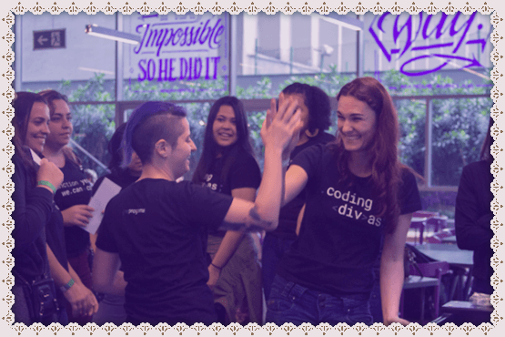
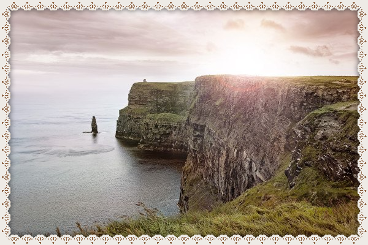
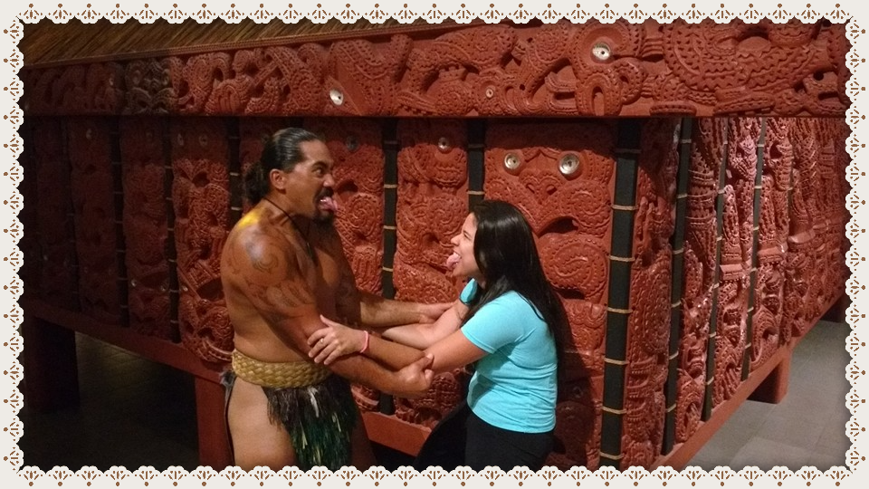

💜 Vamos reprogramar o mundo 💜
As mulheres são maioria da população no Brasil. Segundo estatísticas publicadas pelo Instituto Brasileiro de Geografia e Estatística (IBGE) as mulheres estudam e tem vida mais longa do que em relação aos homens, além disso trabalham cada vez mais
e nas mais diversas áreas. A pergunta é: Por que há poucas mulheres em um setor tão próspero como a tecnologia da informação (TI) que prevê um crescimento de 3% até 2022?
A {reprograma} é uma iniciativa de impacto social que foca em ensinar programação para mulheres cis e trans que não têm recursos e/ou oportunidades para aprender a programar.
Gratidão a toda equipe Reprograma por essa incrível oportunidade.

💜 Joseane Guedes 💜
Meu nome é Joseane, mas podem me chamar de Josie. Eu moro na Paraíba, sou aluna da Reprograma e estou em transição de carreira para tecnologia. Gosto de viagens, animais, yoga, meditação, ayurveda, esportes radicais, musica, enigmas, idiomas e adoro passear
pela praia com meus amigos e sou aspirante à mochileira focada no nomandismo digital!
Sou fã em viagens e viajar é a coisa mais legal do mundo! O verdadeiro tempero da vida. Viajar desperta um sentimento indescritível dentro de mim e satisfaz meu corpo com um formigamento excitante. Essa felicidade insana me acompanha a qualquer hora,
em qualquer lugar ...
Por último, mas não menos importante, viagem não é uma cura mágica para os nossos problemas, mas pode levar a algumas mudanças significativas se gerenciada com a mentalidade certa.
👩🏽⚕️ Trajetória Profissional 💼
Minha jornada inclui várias aventuras e eu já trabalhei em pequenas, médias e grandes empresas do Brasil e do exterior. Sou formada em administração de empresas pela Universidade Federal da Paraíba - UFPB e possuo um MBA em gestão de pessoas pela Fundação
Getúlio Vargas - FGV.
Até o ano de 2020, eu estava estudando e trabalhando no exterior, porém quando a pandemia chegou a maioria dos meus amigos perderam suas fontes de renda, inclusive eu perdi meu emprego. Contudo meus amigos que estavam na área de Tecnologia além de conseguirem
manter seus empregos, ainda foram contemplados com vistos de trabalho. Esse é um dos motivos que me fez repensar e mudar todo o meu planejamento pessoal e profissional. Desde o dia que comecei a estudar programação eu me apaixonei completamente
e o amor por esse desafio só cresce a cada dia.
🛫 Intercâmbios 🛬
Vida de intercambista parece divertida, mas “longe de casa é preciso mais responsabilidade”. Qualquer viagem deve ser planejada e quando se trata de uma que envolverá estudo e trabalho em outro país, ela deve ser ainda mais analisada. Longe de
casa é preciso ter muito mais responsabilidade e é necessário adequar seu tempo, dinheiro e adaptar-se a situações que não existiriam com seus pais por perto. É uma experiência única que propicia um ambiente favorável para lidar com mudanças
o tempo todo!
🌏 Destinos 🌏
🍀Irlanda🍀
A Irlanda é um dos destinos mais procurados pelos intercambistas. E grande parte dessa procura é por conta da permissão de trabalho que o país concede para quem vai estudar por lá. A Irlanda é um país que está em destaque no cenário mundial ultimamente,devido à sua excelente qualidade de vida, desenvolvimento e demais características que tornam um dos melhores países para se viver.

🦘 Australia 🦘
A Austrália é um país localizado na Oceania, entre os oceanos Pacífico e Índico. Sua extensão territorial é de 7.713.364 quilômetros quadrados, considerado o sexto maior país do planeta, com área inferior apenas à da Rússia, Canadá, China, Estados
Unidos e Brasil.

🥝 Nova Zelandia 🥝
A Nova Zelândia é conhecida por suas belas paisagens e pela preservação da cultura indígena. Além das aulas de inglês no país, você poderá trabalhar e realizar atividades como surfe e camping, aproveitando ao máximo o seu tempo livre durante o
intercâmbio na Nova Zelândia.
Um paraíso natural onde já foram filmados tantos filmes como: O Hobbit, O Senhor dos Anéis, Avatar, X-Men Origens, King Kong e muitos outros!

Para saber mais sobre os destinos, acesse: